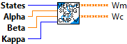
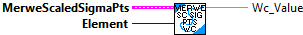
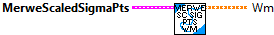
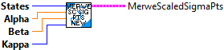

Computes the weights for the scaled unscented Kalman filter.
Inputs:
- States -- Number of states
- Alpha --
- beta -- Incorporates prior knowledge of the distribution of the mean.
- Kapa --
Outputs:
- Wm --
Returns number of sigma points for each variable in the state x.
Inputs:
- MerweScaledSigmaPts -- data cluster
Outputs:
- NumSigmas -- The number of sigma points for each variable in the state x.

Returns the weight for each sigma point for the covariance.
Inputs:
- MerweScaledSigmaPts -- data cluster
Outputs:
- Wc -- the weight for each sigma point for the covariance.

Returns an element of the weight for each sigma point for the covariance.
Inputs:
- MerweScaledSigmaPts -- data cluster
- element -- Element of vector to return.
Outputs:
- Wc_Value -- The element I's weight for the covariance.

Returns the weight for each sigma point for the mean.
Inputs:
- MerweScaledSigmaPts -- data cluster
Outputs:
- Wm -- the weight for each sigma point for the mean.

Returns an element of the weight for each sigma point for the mean.
Inputs:
- MerweScaledSigmaPts -- data cluster
- element -- Element of vector to return.
Outputs:
- Wm_Value -- the element i's weight for the mean.

Generates sigma points and weights according to Van der Merwe's 2004 dissertation[1] for the UnscentedKalmanFilter class.
It parametrizes the sigma points using alpha, beta, kappa terms, and is the version seen in most publications. Unless you know better, this should be your default choice.
States is the dimensionality of the state. 2*States+1 weights will be generated.
[1] R. Van der Merwe "Sigma-Point Kalman Filters for Probabilitic Inference in Dynamic State-Space Models" (Doctoral dissertation)
Constructs a generator for Van der Merwe scaled sigma points.
Inputs:
- states -- the number of states.
- alpha -- Determines the spread of the sigma points around the mean. Usually a small
positive value (1e-3).
- beta -- Incorporates prior knowledge of the distribution of the mean. For Gaussian
distributions, beta = 2 is optimal.
- kappa -- Secondary scaling parameter usually set to 0 or 3 - States.
Outputs:
- MerweScaledSigmaPts -- data cluster

Generates sigma points and weights according to Van der Merwe's 2004 dissertation[1] for the UnscentedKalmanFilter class.
It parametrizes the sigma points using alpha, beta, kappa terms, and is the version seen in most publications. Unless you know better, this should be your default choice.
States is the dimensionality of the state. 2*States+1 weights will be generated.
[1] R. Van der Merwe "Sigma-Point Kalman Filters for Probabilitic Inference in Dynamic State-Space Models" (Doctoral dissertation)
Constructs a generator for Van der Merwe scaled sigma points with default values for alpha, beta, and kappa.
Inputs:
- states -- the number of states.
Outputs:
- MerweScaledSigmaPts -- data cluster

Computes the sigma points for an unscented Kalman filter given the mean (x) and covariance(P)
of the filter.
Inputs:
- MerweScaledSigmaPts -- data cluster
- x -- An array of the means.
- P -- Covariance of the filter.
Outputs:
- SigmaPoints -- Two dimensional array of sigma points. Each column contains all of the sigmas for one dimension in the problem space. Ordered by Xi_0, Xi_{1..n}, Xi_{n+1..2n}.
- Error -- If TRUE, an error occured.